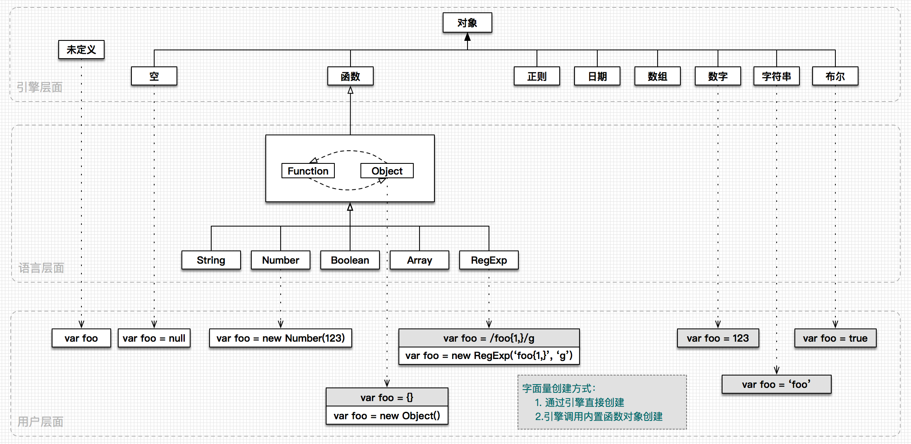
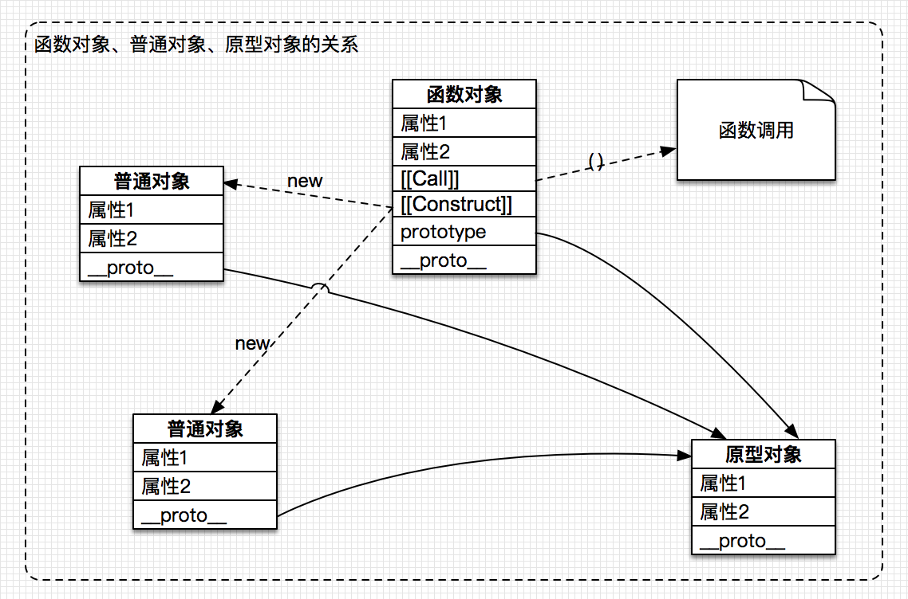
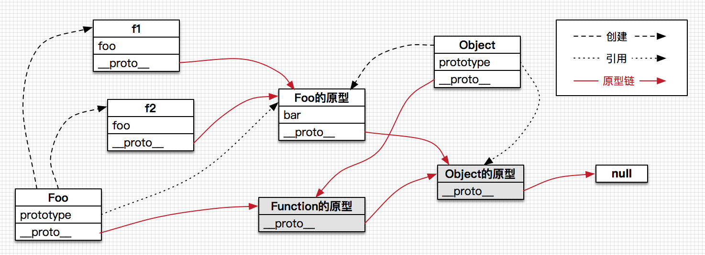
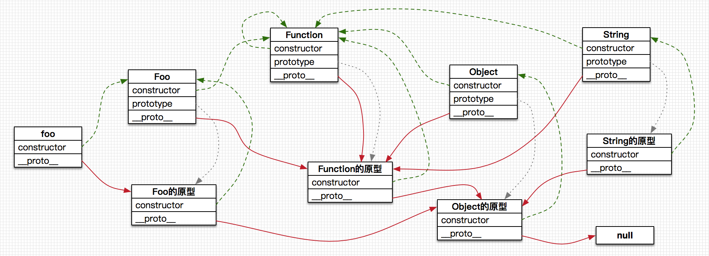
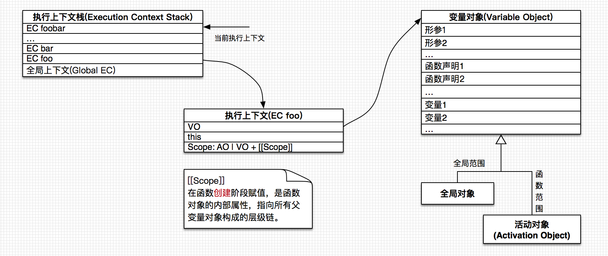
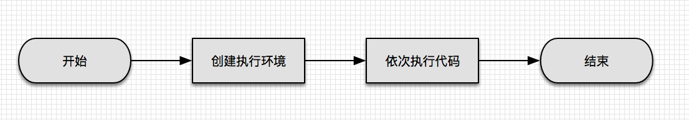
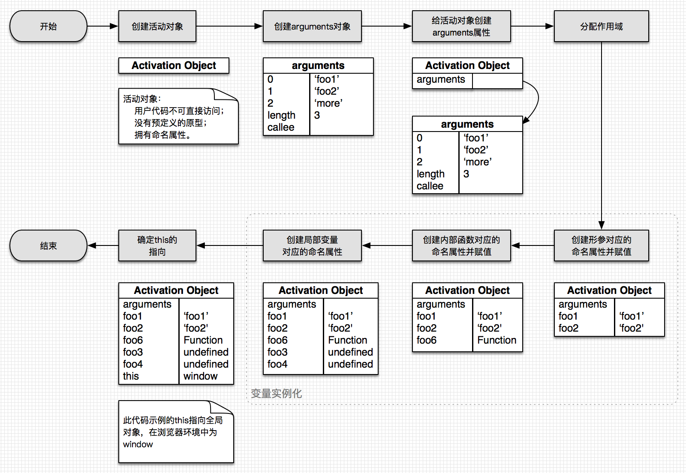
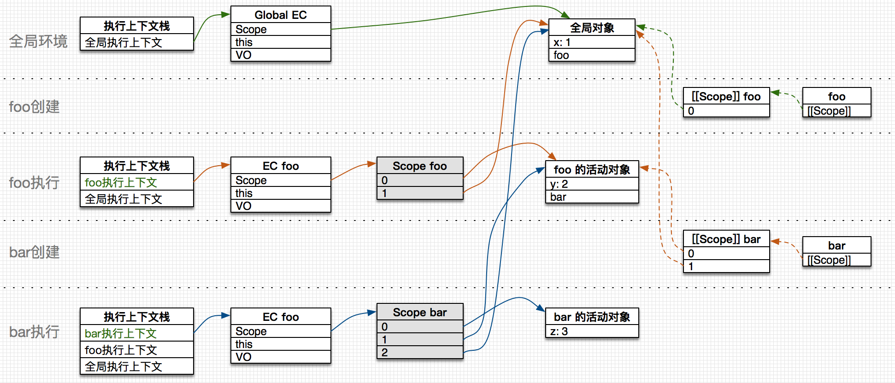

2015年最后一天了，写本文以整理我对 JavaScript 的一些理解，试将零散的知识归总。此文非语法整理，内容偏中高级，如有纰漏或错误，请予以指正。
1. 对象模型
1.1. 数据类型
在 JavaScript 的语法层面，除了 undefined 和 null 一切皆对象，字面量也是对象，而 null 的类型也是对象：
1 | 'foo'.substring(1); |
JavaScript 语言中内置了一些对象用来辅助用户编程，它们均是 函数对象 ，如：
- Function
- Object
- String
- Number
解析引擎中创建了诸多内建类型，它们是实现 JavaScript 各类型的数据结构。
基本类型的字面量创建方式会直接调用解析引擎来创建 JavaScript 对象，它不是内置函数对象的实例：
1 | var foo = 'foo'; |
对象(这里指语法层面的对象)、正则、数组等的字面量创建方式会调用内置函数对象来创建实例：
1 | var foo = {}; |
归纳如下：

1.2. 函数对象
任何JS对象均需要由函数对象创建。函数对象是在普通对象的基础上增加了内建的属性 [[Call]] 和 [[Construct]] ，这一过程由解释器完成，两个属性均指向解释器的内建函数：[[Call]] 用于函数调用，使用操作符 () 时执行；[[Construct]] 用于构造对象，使用操作符 new 时执行。
语法层面上，函数对象也是由其它函数对象(或自己)创建的，使用 function 关键字可以创建用户自定义函数对象。最上游的对象是 Function 。

当对象被创建后，解释器为对象增加 constructor 属性指向创建它的函数对象。
1.3. 原型对象
原型对象通常由内置函数对象 Object 创建，它通常是一个普通对象，但也可能是函数对象。
任何对象都有内建属性 [[Prototype]] 用来指向其原型对象，有些解释器(如V8)会将其开放为 __proto__ 属性供用户代码调用。函数对象有开放属性 prototype ，用来表示通过函数对象构建的对象的原型。
以下条件总是为 true ：
函数对象.prototype === 该函数对象创建的对象.__proto__
示例如下代码的原型关系：
1 | function Foo(){ |
对象指向原型对象的层层链条构成原型链，对象查找属性时沿着原型链向上游找。

通常情况下，Function.prototype 为解析引擎创建的空函数，Object.prototype 为解析引擎创建的空对象。
1.4. 对象的关系
示例如下代码：
1 | function Foo(){}; |
再加上内置函数对象 String，其关系如下：

有如下规律：
- 所有函数对象的原型最终指向 Function.prototype ；
- 所有普通对象(除 Object.prototype)的原型最终指向 Object.prototype，而 Object.prototype 的原型为 null ；
- 所有 constructor 最终指向 Function ，包括它自己；
- 所有原型对象的 constructor 的 prototype 指向自己，普通对象不具备该特性。
2. 执行模型
函数生命周期包括：

2.1. 执行上下文
执行上下文(Execution Context) 是对可执行代码的抽象，某特定时刻下它们是等价的。发生函数调用的时候，正在执行的上下文被中断并将新的执行上下文压入执行上下文栈中，调用结束后(return 或 throw Error)新的上下文从栈中弹出并继续执行之前的上下文。栈底总是全局执行上下文：

变量对象(Variable Object)是执行上下文中的一种数据结构，用来存储：
- 变量
- 函数声明
- 形参
变量对象为抽象概念，其实现分两种情况：
一、全局执行上下文中的变量对象使用全局对象自身实现，因此全局变量可以通过相应的变量对象访问到：
1 | var foo = 'foo' |
二、函数执行上下文中的变量对象为活动对象(Activation Object)，用户代码无法直接访问它。

2.2. 函数执行过程
函数执行前会先为其创建执行环境：

示例以下代码的执行过程：
1 | function foo(foo1, foo2) { |
1) 创建执行环境
该过程重点是创建 活动对象 的命名属性：

2) 依次执行代码

理解了函数执行过程便可以解释局部变量的初始化时机问题：
1 | var foo = 'global'; |
同时也解释了两种函数声明方式的区别：
1 | foo(); // foo |
根据活动对象的属性填充顺序，也可以解释：
1 | alert(x); // function |
2.2. 作用域
示例代码如下：
1 | var x = 1; |
其作用域相关的属性创建过程如下：

其中函数对象的内部属性 [[Scope]] 在某些解释器中实现为 __parent__ 并开放给用户代码。执行上下文中的 Scope 属性构成 作用域链，其实现未必像图中所示使用数组，也可以使用链表等数据结构，ECMAScript 规范对解释器的实现机制未做规定。
变量查找时沿着作用域链向上游查找。例如在函数 bar 中查找 x 时，会依次查找：1）bar的活动对象；2）foo的活动对象；3）全局对象，最终在全局对象中找到。
2.3. 闭包
ECMAScript 使用静态词法作用域：当函数对象创建时，其上层上下文数据(变量对象)保存在内部属性 [[Scope]] 中，即函数在创建的时候就保存了上层上下文的作用域链，不管函数会否被调用。因此所有的函数都是一个闭包(除了 Function 构造器创建的函数)。不过，出于优化目的，当函数不使用自由变量时，引擎实现可能并不保存上层作用域链。
自由变量是在函数内使用的一种变量：它既不是函数的参数，也不是其局部变量。
[[Scope]] 属性是指向变量对象的引用，同一上下文创建的多个闭包共用该变量对象。因此，某个闭包对其变量的修改会影响到其他闭包对其变量的读取：
1 | var fooClosure; |
函数执行时，变量对象的属性变化如下：

可以解释此常犯错的情况：
1 | var data = []; |
通过创建多个变量对象(方式一)或使用函数对象的属性(方式二)可以解决此问题：
1 | // 方式一 |
从理论角度讲，ECMAScript 中所有的函数都是闭包。然而实践中，以下函数才算是闭包：
- 即使创建它的上下文已经销毁，它仍然存在
- 代码中引用了自由变量
3. 其它
3.1. 不使用var声明并不能创建全局变量
不使用 var 关键字创建的只是全局对象的属性(全局执行上下文中的变量对象使用全局对象自身实现)，它并不是一个变量。可以用如下代码检测区别：
1 | alert(a); // undefined |
3.2. 三种函数类型
1) 函数声明在程序级别或另一函数的函数体：
1 | function foo() { |
2) 函数表达式在表达式的位置：
1 | var foo = function () { |
函数表达式的作用是避免对变量对象造成污染。
3）Function构造器的 [[Scope]] 属性中只包含全局对象：
1 | var x = 10; |
参考资料：